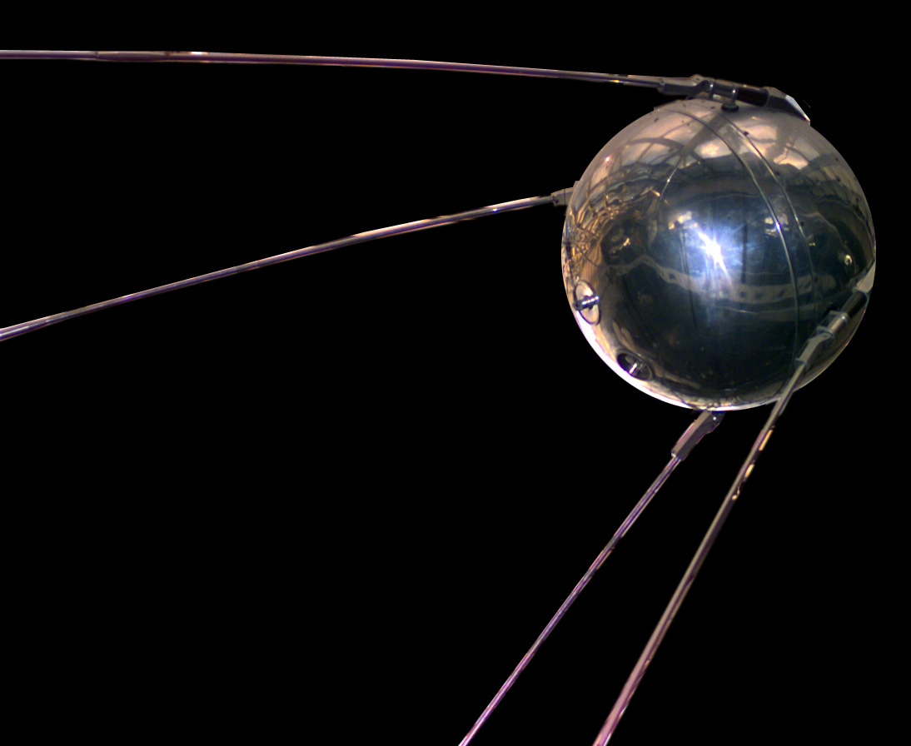
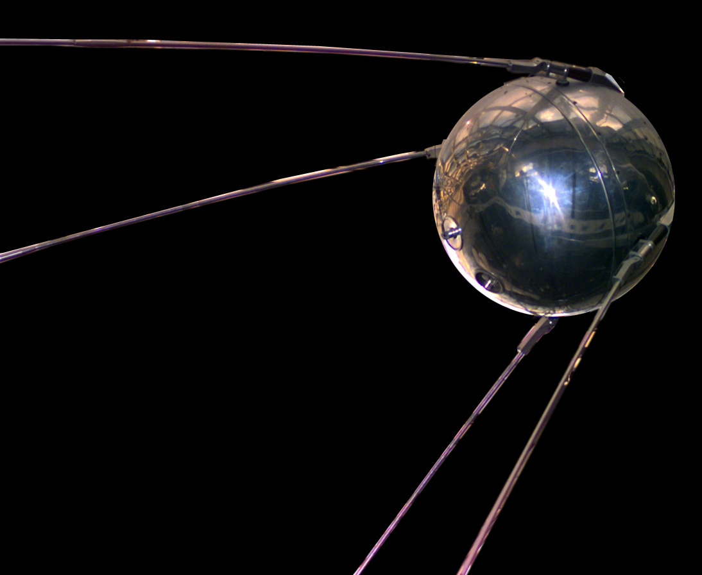
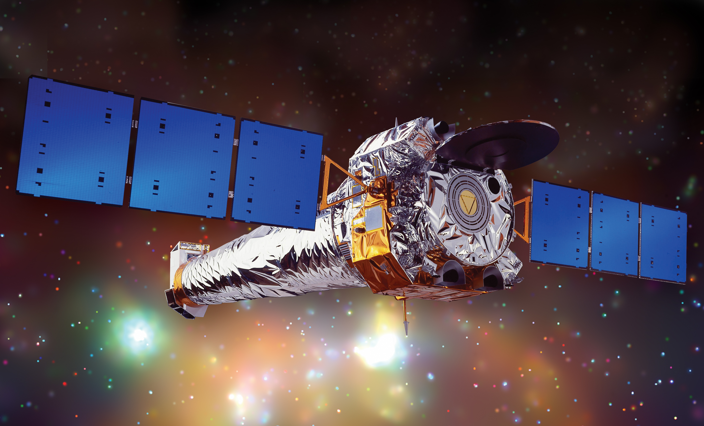
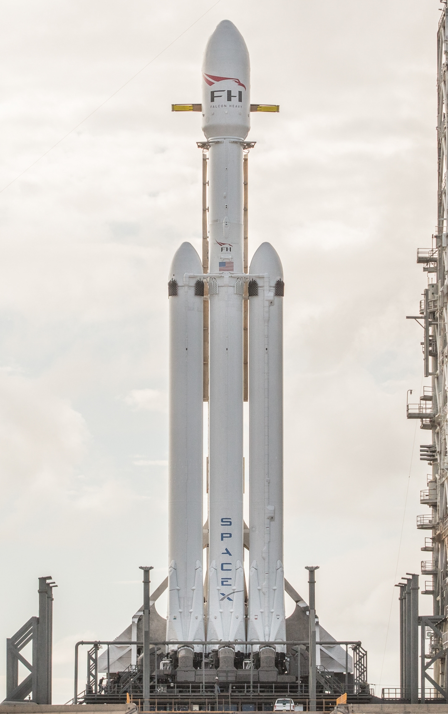

1957
outubro: O Sputnik 1, primeiro foguete no espaço, é lançado pela União Soviética.
outubro: O Sputnik 1, primeiro foguete no espaço, é lançado pela União Soviética.
novembro: O Sputnik 2, primeiro foguete a carregar um animal, lançado pela União Soviética. Sua ocupante, a cadela Laika, morre depois de sete dias no espaço.
janeiro: O Explorer 1, primeiro satélite americano em órbita, é lançado.

outubro: A Nasa é fundada pelo governo dos Estados Unidos.

janeiro: A Luna 1, primeiro satélite artificial a orbitar o Sol, é lançado pela União Soviética.

setembro: A Luna 2, também soviética, é a primeira sonda a alcançar a Lua.
abril: A Vostok 1 é lançada pela União Soviética com o cosmonauta Yuri Gagarin, o primeiro homem no espaço. Ele orbita a Terra uma vez.

maio: A Mercury Freedom 7 é lançada com Alan Shepard, primeiro americano no espaço.

agosto: A Vostok 2 é lançada pela União Soviética com o cosmonauta Gherman Titov, o terceiro homem no espaço e o primeiro a protagonizar uma missão longa.

fevereiro: A Mercury Friendship 7 é lançada pelos Estados Unidos com o astronauta John Glenn, primeiro americano a orbitar a Terra.

dezembro: A Mariner 2, primeira nave a fazer uma viagem interplanetária, chega a Vénus.
junho: A Vostok 6 leva ao espaço Valentina Tereshkova, a primeira mulher no espaço.

julho: A nave americana Ranger 7 envia à Terra as primeiras fotografias detalhadas da Lua.

março: O soviético Alexei Leonov torna-se o primeiro astronauta a caminhar no espaço.

fevereiro: A Luna 9 soviética torna-se a primeira nave não-tripulada na Lua.

março: A Venera 3 soviética torna-se a primeira nave não-tripulada a alcançar outro planeta (Vénus).

abril: O foguete soviético Soyuz 1 é lançado com o astronauta Vladimir Komarov a bordo. Ele morre e torna-se a primeira vítima fatal da exploração no espaço.

outubro: A Apollo 7, primeira missão do projeto Apollo da Nasa, é lançada.

dezembro: A Apollo 8 torna-se a primeira missão tripulada a orbitar a Lua.
abril: A Apollo 13 é lançada, mas uma grave falha técnica faz com que a missão seja abortada antes da chegada à Lua. Os três astronautas voltam à Terra em segurança.

junho: Três cosmonautas soviéticos protagonizam a primeira ocupação humana de uma estação orbital, a pioneira Salyut 1. Eles morrem na reentrada na atmosfera terrestre.

julho: Os astronautas da Apollo 15 conduzem um jipe lunar na superfície da Lua.

novembro: A Mariner 9, dos Estados Unidos, torna-se a primeira nave a orbitar outro planeta (Marte).

maio: Os Estados Unidos lançam o laboratório espacial Skylab.
julho: A Apollo 18 americana e a Soyuz 19 soviética juntam-se em pleno espaço (e em plena Guerra Fria), na primeira ligação internacional entre naves espaciais.

setembro: A Pioneer 11 americana chega à atmosfera de Saturno, obtendo as primeiras imagens detalhadas do planeta.

abril: A primeira missão do vai-vem espacial americano Columbia é lançado. É a primeira nave reutilizável a viajar ao espaço.
maio: Dois cosmonautas soviéticos chegam à estação Salyut 7 e tornam-se os primeiros a habitar uma estação espacial. Ficam lá por 211 dias.

abril: O vai-vem espacial Challenger é lançado para a sua primeira missão.

fevereiro: O astronauta americano Bruce McCandless faz a primeira caminhada livre no espaço.

agosto: O vai-vem espacial Discovery é lançado para a sua primeira missão.
outubro: O vai-vem espacial Atlantis é lançado para a sua primeira missão.
janeiro: O vai-vem espacial Challenger explode pouco depois do lançamento, e sete astronautas morrem.
fevereiro: O módulo central da estação espacial MIR é lançado.

dezembro: O astronauta russo Yuri V. Romanenko volta à Terra depois de 326 dias na estação espacial MIR.

maio: O vai-vem espacial Atlantis lança a sonda Magellan.
outubro: O vai-vem espacial Atlantis lança a sonda Galileo.

abril: O vai-vem espacial Discovery leva o telescópio Hubble para o espaço.

maio: O vai-vem espacial Endeavour é lançado para sua primeira missão.
dezembro: O vai-vem espacial Endeavour faz a primeira reparação em órbita no telescópio Hubble.
fevereiro: O russo Sergei Krikalev viaja a bordo da Discovery, na primeira missão conjunta dos EUA e Rússia, num vai-vem espacial.
março: Depois de 438 dias no espaço, o astronauta russo Valeri Polyakov volta à Terra com o recorde de maior tempo no espaço.

junho: O vai-vem espacial Atlantis chega à estação MIR e troca a sua tripulação em pleno espaço.

dezembro: A sonda americana Galileo chega a Júpiter.

março: O vai-vem espacial Atlantis é lançado, ligando-se à estação espacial russa MIR. A astronauta Shannon Lucid fica na estação e bate recordes de permanência no espaço, para uma mulher.
novembro: Depois de 20 anos sem estudar Marte, os EUA lançam a sonda Mars Global Surveyor.

julho: A sonda Mars Pathfinder chega a Marte.

outubro: A missão Cassini, que chegaria a Saturno em sete anos, começa.

novembro: O vai-vem espacial Columbia vai ao espaço com o primeiro astronauta japonês, Takao Doi.

janeiro: A Nasa lança a sonda Lunar Prospector, que envia dados reforçando a hipótese de colonização da Lua.

outubro: O astronauta americano John Glenn volta ao espaço e torna-se o homem mais velho a viajar numa nave espacial (77 anos).

novembro: O módulo espacial russo Zarya é lançado. É o primeiro componente da Estação Espacial Internacional.
fevereiro: A sonda Voyager completa 22 anos no espaço e estabelece um novo recorde.
maio: O vai-vem espacial Discovery torna-se a primeira nave a ligar-se à Estação Espacial Internacional.
julho: Outra viagem com vai-vem espacial lança o observatório Chandra. Na mesma viagem, a americana Eileen Collins torna-se a primeira mulher a comandar uma missão espacial.
setembro: A sonda Mars Climate Orbiter perde-se ao entrar na atmosfera de Marte.

dezembro: A sonda Mars Polar Lander também se perde, tornando-se a segunda missão fracassada a Marte em apenas quatro meses.
agosto: Cientistas americanos descobrem um novo planeta no "quintal" da Terra.
novembro: A Estação Espacial Internacional recebe seus primeiros moradores.

fevereiro: O vai-vem espacial Atlantis parte em missão transportando um laboratório no valor de 1,4 biliões de dólares.
março: A estação espacial MIR é desativada e destruída. Os seus restos repousam no fundo do Oceano Pacífico.
abril: Dennis Tito, o primeiro turista espacial, chega à Estação Espacial Internacional e diz: "Eu amo o espaço".

outubro: A sonda da Nasa Odyssey chega a Marte para procurar vestígios de água.
novembro: a China anuncia que quer ser o terceiro país a chegar ao espaço.
abril: A Nasa divulga imagens da nova câmera do telescópio Hubble.
abril: Mark Shuttleworth, um magnata sul-africano, parte numa viagem à estação internacional.

maio: A Nasa encontra gelo na superfície de Marte.
julho: A Atlantis parte para instalar a "porta da frente" da Estação Espacial Internacional.
agosto: A Nasa perde a sonda espacial Contour, no valor de 160 milhões de dólares.
novembro: A Estação Espacial Internacional recebe três novos moradores.
fevereiro: O vai-vem espacial Columbia desintegra-se durante a reentrada na atmosfera terrestre, matando sete Astronautas.

agosto: O Veiculo Lançador de Satélites Brasileiro (VLS) explode, matando 21 pessoas, entre as quais sete tripulantes.
junho: Primeiro voo espacial privado, realizado pela nave SpaceShipOne - uma nave espacial experimental da empresa Scaled Composites.
julho: Primeira órbita de Saturno efetuada pela sonda espacial Cassini-Huygens.
janeiro: Primeiro pouso em Titã na Cassini-Huygens, uma sonda espacial não-tripulada.
março: Soyuz TMA-8 - Primeiro brasileiro no espaço (Marcos Pontes).
dezembro: A Discovery viaja até à estação espacial internacional, para a instalação de mais um painel solar. Houve alguns problemas técnicos, mas a missão acaba por ser bem sucedida.
maio: A nave Discovery volta à ISS, para entregar a peça central da experiência da JAXA (Japan Aerospace Exploration Agency Kibo laboratóries ), a 'agência espacial Japonesa', sendo esta missão, a STS-124 a segunda de três vôos espaciais, que entregou os elementos para completar o laboratório japonês à ISS.
março: A Discovery regressa à Terra depois da sua última missão, pousando no Centro Espacial Kennedy, na Flórida, nos Estados Unidos, depois de 27 anos de serviços prestados. Se tratou da trigéssima quinta (35ª) viagem de um vai-vem espacial (ônibus espacial) com destino à Estação Espacial Internacional (ISS, na sigla em inglês) e a 39ª missão do Discovery ao espaço. Ao todo, a recordista Discovery passou o equivalente a um ano inteiro em órbita, sendo que nesta última missão de número STS-133, foram levados seis astronautas e um robô humanóide à Estação Espacial Internacional.
maio: A Endeavour regressa da sua última missão de outro vei-vem espacial.
julho: A Atlantis regressa da sua última missão após mais um vai-vem espacial.
novembro: Lançamento do veículo robô Curiosity com a missão de explorar o planeta Marte em busca de vestígios de vida presente ou passada.
maio: Dragon SpaceX conquista a primeira atracação de uma capsula espacial privada com a ISS.
dezembro: China se torna a Terceira nação a pousar uma sonda espacial na Lua - Chang'e 3
julho: New Horizons torna-se a primeira nave a sobrevoar Plutão, o mais distante que algum objeto humano chegou até o momento.
SpaceX estreia Falcon Heavy e Nasa lança caçador de exoplanetas
